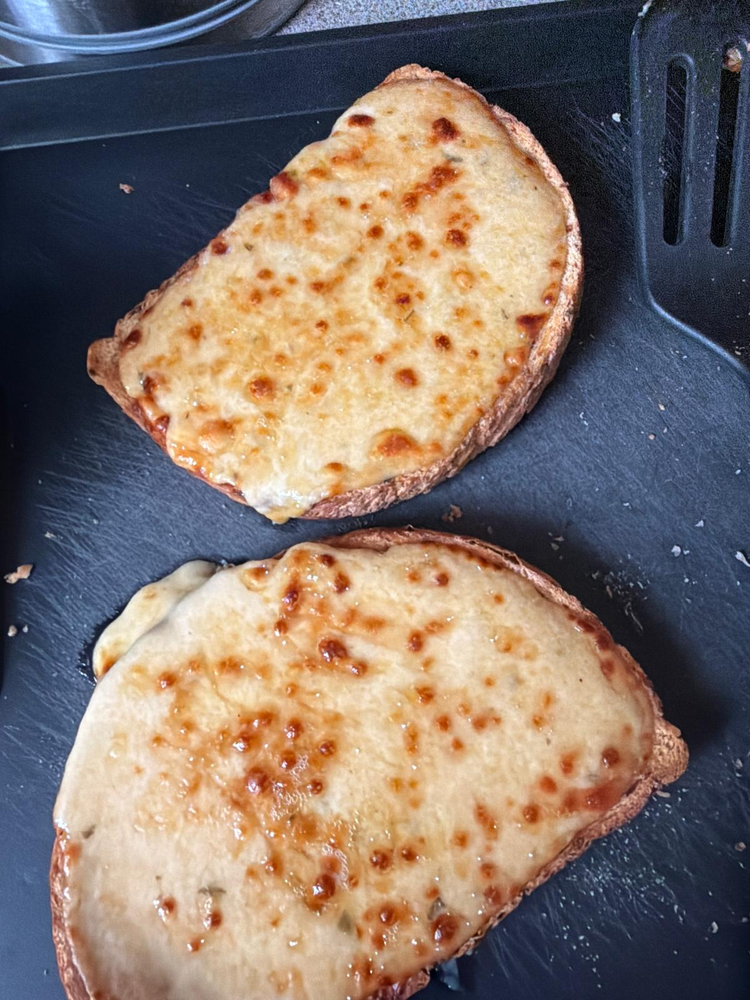

I really like Welsh Rarebit
Why do I like it?
- It tastes of cheddar (I like cheddar)
- It goes really amazing with bread
- I used to have bread and wine every morning during easter time from the church and it was fire, this is just a better reincarnation of that
- It was a good way to use cheddar cheese i didn't like because of their wax seals making an aftertaste
Here are some recipes you could use to make a Welsh Rarebit
An online recipe
Mary Berry's recipe
To be honest, my household did not keep a lot of beer or ale on hand so i would sub in wine and it would work too
